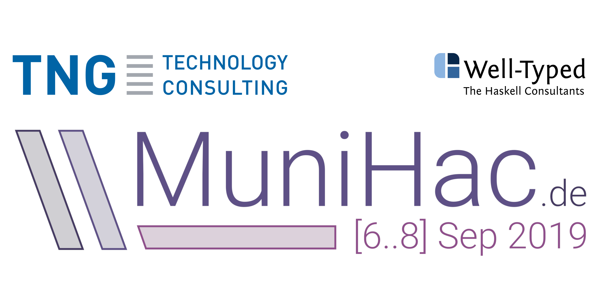

MuniHac
MuniHac is a three day Haskell hackathon taking place from Friday 6th to Sunday 8th September 2019 in the beautiful city of Munich, hosted and sponsored by TNG Technology Consulting GmbH and co-organized by Well-Typed LLP. The Hackathon is intended to follow the tradition of other Haskell Hackathons such as the ZuriHac, HacBerlin, UHac and many others.
We have capacity for ~80 Haskellers to collaborate on any Haskell-related project they like. There will be beginner workshops and a mentor program to help you get started. Of course you can as well start hacking Haskell right away. Anyone is welcome to participate. Beginner or pro, we've got you covered :)
Hacking on Haskell projects will be the main focus of the event, but we will also have a couple of talks by renowned Haskellers. The MuniHac is furthermore a great opportunity to meet and socialize with fellow Haskellers and have a great time together. Among other things, we are looking forward to having BBQ, pizza and a traditional Bavarian Breakfast.
Beta-Straße 13a
85774 Unterföhring


Keynotes
Fast Downward: Solving Declarative Planning problems in Haskell
Oliver Charles
The classical planning branch of AI - one of the oldest branches of AI - is primarily interested in determining a sequence of actions to move from a known state to another state that satisfies some conditions required by an operator. Traditionally, this work has happened in the very physical space of moving robots, but it's so much more general! In this talk, Ollie will demonstrate his work on a Haskell DSL to interact to the state of the art general purpose solver "Fast Downward", but in the context of automating a hypothetical smart home.
The many faces of isOrderedTree
Joachim Breitner
In this talk, we will look at a seemingly simple programming problem – checking whether the elements in a binary tree are in order – and not only explore many different approaches to solving this problem, but also show how they are all connected. As we do that, we will touch upon equational reasoning, defunctionalization, the worker-wrapper transformation, and more. We learn about the limits of type-driven development and finally appreciate the deep significance of type class laws.
This talk only assume elementary knowledge of Haskell (or functional programming in general): Algebraic data types and recursive functions.
Making a Haskell IDE
Neil Mitchell
I've always wanted a Haskell IDE. The absence of a simple and robust solution led me to build Ghcid, which I've been using for many years. However, I have moved on, now using a real Haskell IDE based on technology we developed at Digital Asset for the DAML programming language. It turns out building an IDE is harder than I expected, so in this talk I'll cover three topics:
- The theory behind building an IDE. We use an in-memory dependency graph, with some interesting tweaks.
- What's there today and how you can use it. I'll also cover the relationship to haskell-ide-engine, DAML and other related projects.
- What's missing and how you can help. I'll be hacking on the IDE at MuniHac, and everyone is welcome to join in.
Projects
- servant-uverb: Servant endpoints returning open union types
- HieDb: Find unreachable code in Haskell projects
- quickcheck-state-machine: State Machine Tests with QuickCheck
- ghcide: An IDE for GHC (renamed from hie-core)
- ghcide-nix: ghcide for multiple GHC versions
- releaser: Automation for releasing Haskell packages
- AURIS: Mission Control System
- optics: An easier-to-use lens library
- generic-lens: Auto-generated optics from GHC Generics
- eventlog2html: HTML view of GHC event logs
- Tenpureto: Bootstrapping projects from composable templates